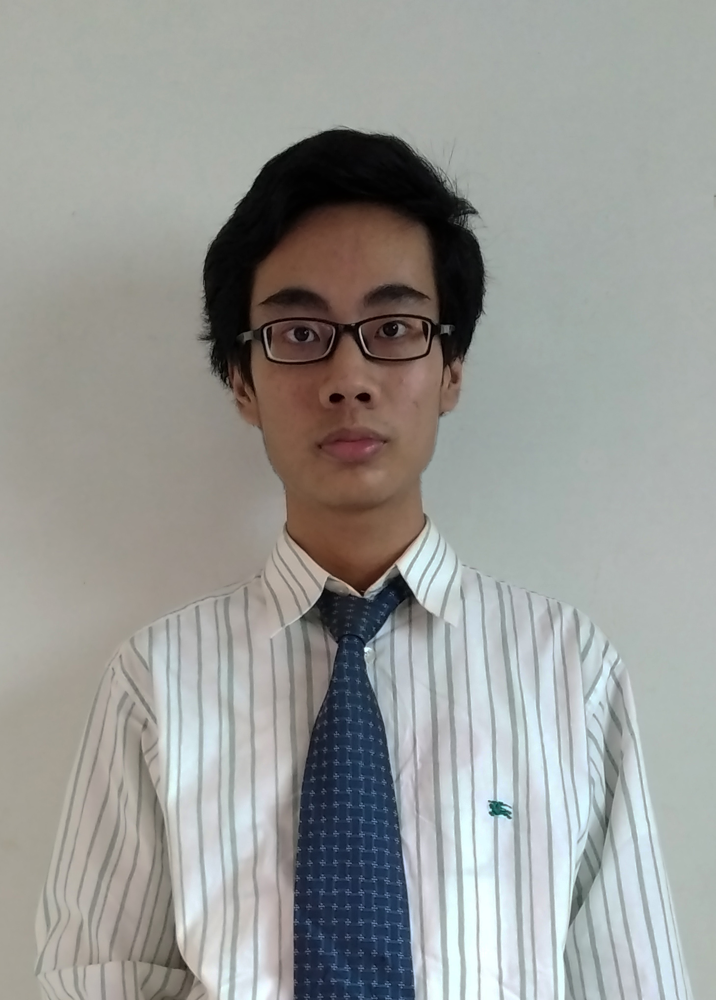
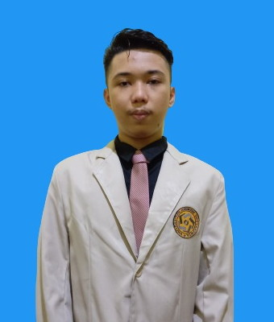
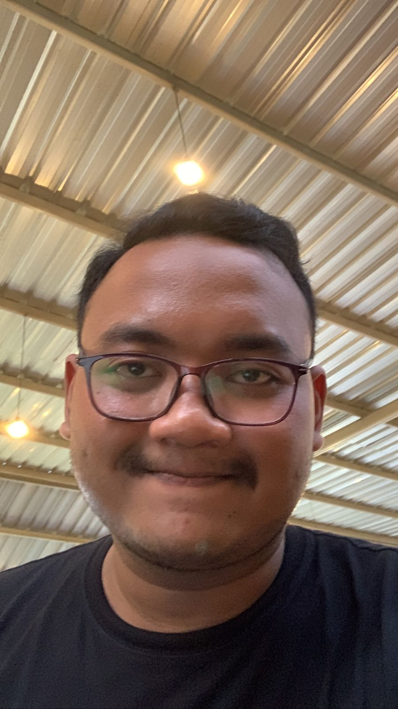

Kelola belajar masih akan dikembangkan nih, nantikan
kelanjutan-nya ya...
Nama saya William.
Saya ingin projek Kelola
Belajar yang dibuat oleh tim saya ini lebih baik, interaktif, dan menarik.




Naufal, Faisal,
Philipus, dan Riza. Mereka
adalah kawan-kawan
saya yang berjasa dalam pembuatan web Kelola Belajar ini.
Rencana pengembangan
Berangkat dari projek yang
telah ada saya berniat untuk menggunakan beberapa framework, tools, atau bahasa pemrograman dalam projek ini
antara
lain :
PHP
SQL
REST API
BOOTSTRAP
JQUERY
dan komponen-komponen lain apabila diperlukan.
Halaman ini dibuat dengan bootstrap dan jquery